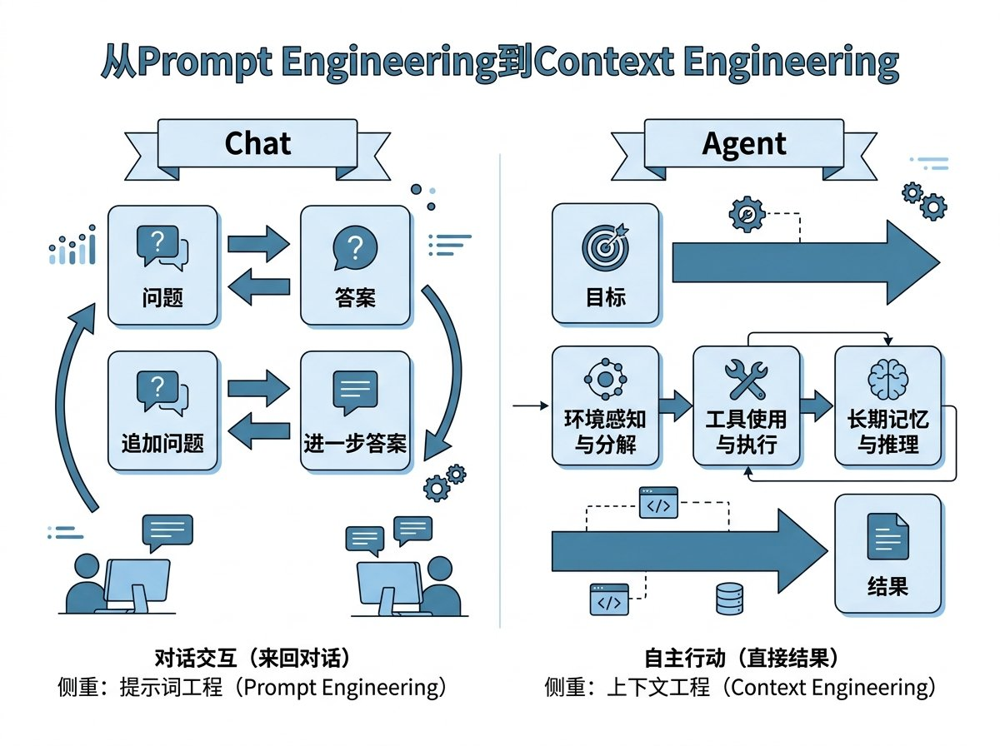

复盘AI Agent创业技术栈教训：别迷信技术领先
别迷信“技术领先”：复盘我们做 Content Ops Agent 踩过的坑
很多人问我，为什么现在 AI 创业这么卷？是不是因为我们的模型比 OpenAI 强？
错。大错特错。
我见过太多团队死在“技术自嗨”上。他们以为只要把 LLM（大语言模型）调教得再聪明一点，就能颠覆行业。但现实是，AI 创业的本质不是技术领先，而是构建不依赖创始人的生态系统。
我们在打磨 content ops agent 的过程中，踩过无数坑，也交了不少学费。今天我不讲虚的，直接复盘我们在技术栈选择上的几个致命教训。如果你也在做 AI Agent，这篇内容能帮你省下一半的试错成本。

教训一：从 Chat 到 Agent，核心变了
两年前，我们还在做基于 Prompt Engineering（提示词工程）的聊天机器人。那时候的逻辑很简单：用户问，AI 答。
但当你试图让 AI 去执行复杂的内容运营智能体任务时，这套逻辑就崩了。
看看这张图，这是我们要走过的路：
Chat 模式侧重对话交互，Agent 模式侧重自主行动。
- Chat：你问一个问题，它给一个答案。
- Agent：你设定一个目标，它感知环境、调用工具、使用长期记忆，最后直接给你结果。
从 Prompt Engineering 转向 Context Engineering（上下文工程），是第一个分水岭。
很多创业者在这里栽跟头。他们试图用更长的 Prompt 来让 AI “记住”所有规则。结果呢？Token 费用爆炸，响应速度变慢，准确率反而下降。
我们发现，真正的瓶颈不在模型智商，而在上下文管理。你需要让 Agent 知道它当前处于什么状态、有哪些可用工具、历史决策是什么。这不再是简单的问答，而是一场复杂的推理游戏。
教训二：MCP 协议不是可选，是必选
第二个教训，关于连接性。
早期我们坚持自建一套封闭的工具接口。我们认为这样更安全、更可控。直到我们接入了一家大型企业的内部系统，才发现这种“孤岛式”架构有多愚蠢。
每次对接新平台，都要写一遍代码。为了支持 Twitter、LinkedIn、微信等不同渠道，我们不得不维护几十套不同的 API 适配层。
黄仁勋说过，预训练只是开始，推理和合成数据才是未来。 同理，模型能力只是基础，连接生态的能力才是壁垒。
这就是为什么我们后来全面拥抱 MCP (Model Context Protocol) 协议。
MCP 协议让 AI 智能体生态实现了标准化的工具连接。
通过 MCP，我们的 content ops agent 可以像插 USB 一样，快速接入各种社交媒体账号、CMS 系统和数据分析工具。不再需要为每个客户定制开发，而是提供一个标准的“技能包”。
目前，CreBee 团队版已经支持全功能 API MCP，这意味着你可以轻松集成任何你想要的第三方服务。这才是真正的可扩展性。
教训三：不要忽视“人”的因素，尤其是 IP 隔离
第三个教训，最痛，也最真实。
我们曾以为，只要 Agent 够聪明，就能自动发布内容。结果上线第一天，两个关联账号因为共享同一个出口 IP，被平台判定为“机器刷量”，直接封号。
规避账号群 IP 集中的平台风险，是内容运营的铁律。
很多技术出身的创始人容易忽略这一点。他们认为网络代理只是个小配置。但对于内容运营来说，IP 隔离就是生命线。
于是，我们在 CreBee 中新增了网络代理设置服务，支持账号组独立 IP。这不是一个简单的功能，这是对平台规则的深度理解和技术妥协。
同时，我们也意识到，AI 正在快速渗透科研领域，显著提升效率，但在内容营销这个领域，**“拟人化”**依然至关重要。我们需要让 Agent 不仅会写，还会“伪装”成真人。
教训四：技术红利分配不均，你要做那个“分蛋糕”的人
素材里提到一个很有意思的现象：AI 工具的使用高度集中在高收入国家以及精英知识型员工聚集区。
这是一个危险信号。如果只有大厂和精英才能用上最好的 AI Agent，那普通中小企业怎么办？
我们做 content ops agent 的初衷，就是为了打破这种不公。
你看，有一家名为“止于至善投资”的小型私募，竟然敢招聘 16 岁的高三学生做投研，并承诺提供每年 5 万元的 AI 额度。这说明什么？
AI 时代，能力重于学历，工具重于资历。
对于初创型科技企业创始人来说，你们缺乏运营经验，时间宝贵，成本敏感。你们不需要雇佣一个昂贵的内容团队，只需要一个强大的 content ops agent。
CreBee 团队版支持 10 成员、100 社媒账号、不限量发布，时限 365 天。我们不是在卖软件，我们是在卖一种**“平民化的 AI 赋能”**。
结语：别做“天才”，要做“园丁”
回顾这些教训，我发现一个共性：成功的 AI 产品，往往不是技术最炫酷的，而是最能融入现有工作流的。
- 从 Chat 到 Agent，要懂上下文；
- 从封闭到开放，要懂 MCP；
- 从理想化到落地，要懂 IP 隔离和平台规则；
- 从精英垄断到普惠，要懂成本控制。
“AI 不会取代你，但会用 AI 的人会取代你。” 这句话听腻了吧？
换个说法：“不懂技术选型的创始人，会被懂技术的对手按在地上摩擦。”
我们不想做那个高高在上的“技术权威”，我们想做你身边的“数字园丁”。帮你修剪枝叶，灌溉流量，让你专注于核心的战略思考。
如果你也是初创团队的创始人，或者是一个被内容运营折磨得焦头烂额的内容经理，不妨试试我们的 content ops agent。
不用担心学不会，也不用担心太贵。毕竟，连 16 岁的少年都能用 AI 颠覆私募行业，你又有什么理由拒绝呢？
点击链接，开启你的自动化内容运营之旅。
今日互动关于「复盘AI Agent创业公司的技术栈选择」，你怎么看？ 欢迎在评论区分享你的看法。